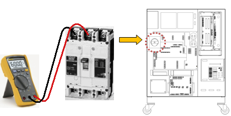
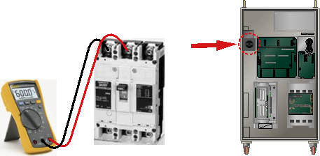
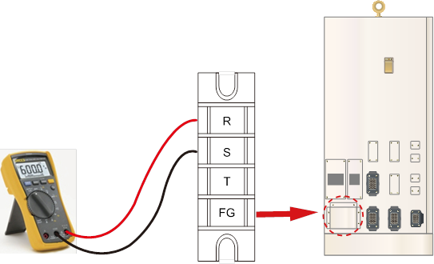
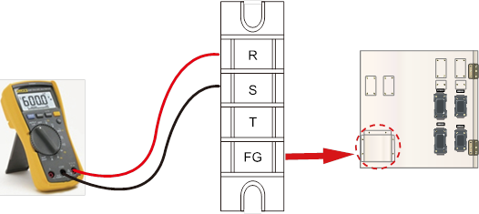

경고(Warning)
고전압 측정 시 주변 부품 및 상간 단락 가능성이 있으므로 주의하십시오.
(1) 제어기에 부착된 명판의 전압과 실제 입력전압을 확인하십시오.
제어기에 실제로 공급되는 전압이 명판에 표기된 전압의 허용 범위 이내인지를 확인하십시오. 입력전압의 허용 범위는 명판에 표기된 값의 10% 이내이고, AC 220V 기준으로 AC 198V 이상이어야 합니다. 아래의 그림은 제어기의 입력전압의 측정방법을 나타낸 것입니다. 측정된 전압이 허용 범위를 벗어나는 경우에는 전원 설비를 점검하여 주십시오.
n 전면 스위치의 전원라인 측 측정

(a) Hi5a-S 제어기

(b) Hi5a-N 제어기
그림 1.247 전원 스위치의 전원라인 측 측정
|
경고(Warning) 고전압 측정 시 주변 부품 및 상간 단락 가능성이 있으므로 주의하십시오. |
1) Hi5a-C1X 제어기: 측면 터미널 블록의 3상 단자 측정

그림 1.248 Hi5a-C1X 제어기의 3상 전원 터미널 블록
2) Hi5a-C2X 제어기: 측면 터미널 블록의 3상 단자 측정

그림 1.249 Hi5a-C2X 제어기의 3상 전원 터미널 블록